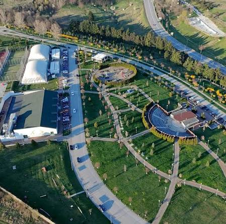
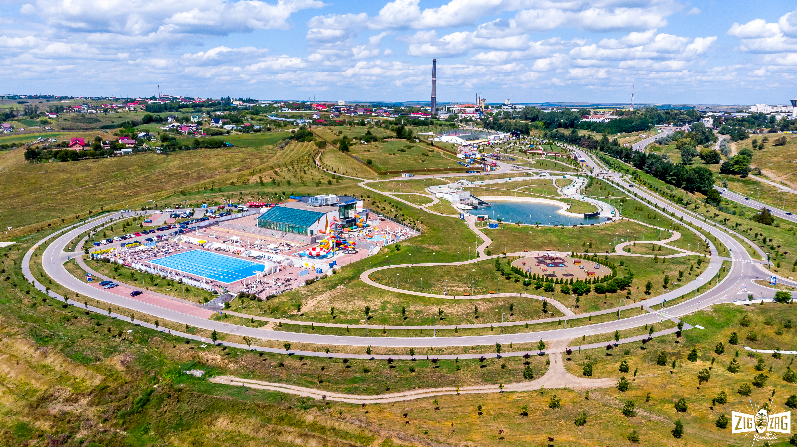
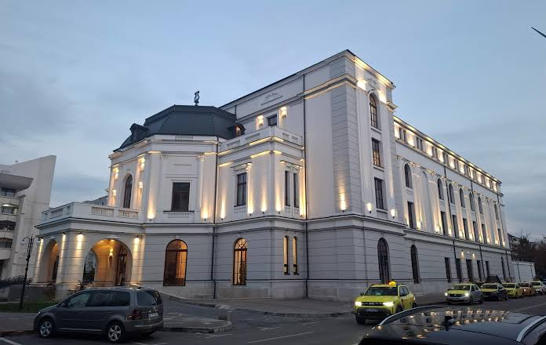
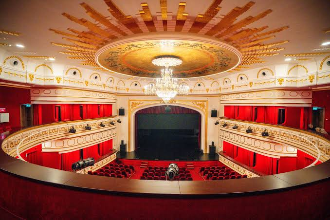

Ghidul Timpului Liber și al Atracțiilor din Botoșani
Descoperă cum este organizat orașul nostru și unde îți poți petrece timpul liber, de la parcuri moderne și zone de agrement, până la cultură, muzee și seri relaxante în natură.
Cum funcționează județul Botoșani
Administrația locală și județeană coordonează dezvoltarea infrastructurii urbane, serviciile publice și conservarea patrimoniului cultural și natural. Prin proiecte moderne de amenajare urbană, autoritățile sprijină atât întreținerea zonelor verzi, cât și viața civică și turistică din regiune.
Parcul Cornișa - Centrul de Agrement și Sport
Parcul Cornișa este cel mai modern complex de agrement și sport din județ, întins pe zeci de hectare. Oferă facilități multiple pentru toate vârstele: patinoar, terenuri de sport, zone de plimbare și un parc acvatic spectaculos.


Parcul de Agrement Pacea
Un spațiu verde tradițional, ideal pentru plimbări în aer liber, alergare și relaxare într-un cadru liniștit, departe de agitația cotidiană.
Plimbare și Seri de Film la Lacul cu Nuferi
O plimbare relaxantă până la pitorescul Lac cu Nuferi te va purta printr-un peisaj feeric, plin de vegetație. În serile calde, zona prinde viață prin evenimente speciale de tipul „seară eminesciană / seară de film în aer liber”, unde vizitatorii se pot bucura de proiecții cinematografice sub cerul înstelat.


Teatrul „Mihai Eminescu”
După o perioadă lungă de renovare și așteptare, emblematicul Teatru „Mihai Eminescu” și-a redeschis porțile, punând din nou Botoșaniul pe harta culturală a țării. Clădirea impresionează printr-o arhitectură exterioară magnifică și un interior somptuos.


Case Memoriale și Muzee
Botoșaniul este un ținut al marilor personalități culturale. Poți vizita numeroase muzee și case memoriale care păstrează vie memoria unor figuri ilustre precum Mihai Eminescu (la Ipotești), George Enescu, Nicolae Iorga sau Ștefan Luchian, oferind o incursiune fascinantă în istoria artei și a literaturii române.